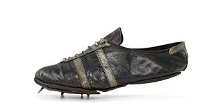

Engineering the edge between raw human power and world record speed
Sprinting is the ultimate test of human power, but the equipment an athlete wears can make all the difference. When Jesse Owens ran in 1936, he dug holes in a cinder track and wore heavy leather shoes which gave poor energy return.

Compare that to modern champions like Usain Bolt and Letsile Tebogo, who explode from starting blocks onto synthetic, energy-returning tracks in lightweight "super spikes" with carbon fiber plates.

At Sprint-Tribe, we produce gearthat defines the current generation and era because whilst the engine is human the technology behind it maximisizes every millisecond to produce peak performance.